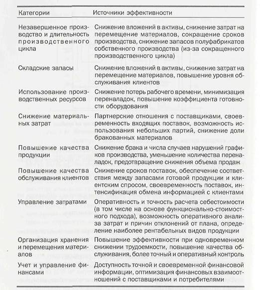

Методики и алгоритмы, применяемые различными консалтинговыми компаниями для оценки окупаемости инвестиций, в принципе основаны на одних и тех же принципах, хотя и различаются в деталях. Более того, с течением времени, по мере накопления опыта работы в разных отраслях и по мере изменения макроэкономической ситуации, в методики вносятся более или менее значительные коррективы.
В общем случае ожидаемые улучшения, достигаемые при помощи системы, могут быть сгруппированы в определенные категории, для каждой из которых характерны свои источники эффективности (рис. 16).
 |
Результаты оценки или анализа окупаемости проекта подлежат оформлению в виде отчета. Разумеется, никаких стандартных или общепринятых форм просто не существует. Тем не менее по этому поводу можно дать несколько рекомендаций.
Прежде всего, источники окупаемости должны быть четко разграничены по двум позициям:
Что касается горизонта оценки окупаемости (т.е. периода времени, который будет охватывать инвестиции и их возврат), то он не должен быть меньше пяти лет. При этом следует учитывать, что некоторые улучшения будут проявляться не сразу, а лишь стечением времени. Фактор стоимости денег во времени обязательно следует принимать во внимание. Для этого обычно используются рассмотренные выше понятия чистой приведенной стоимости и внутренней нормы рентабельности, а также такой показатель, как период окупаемости.